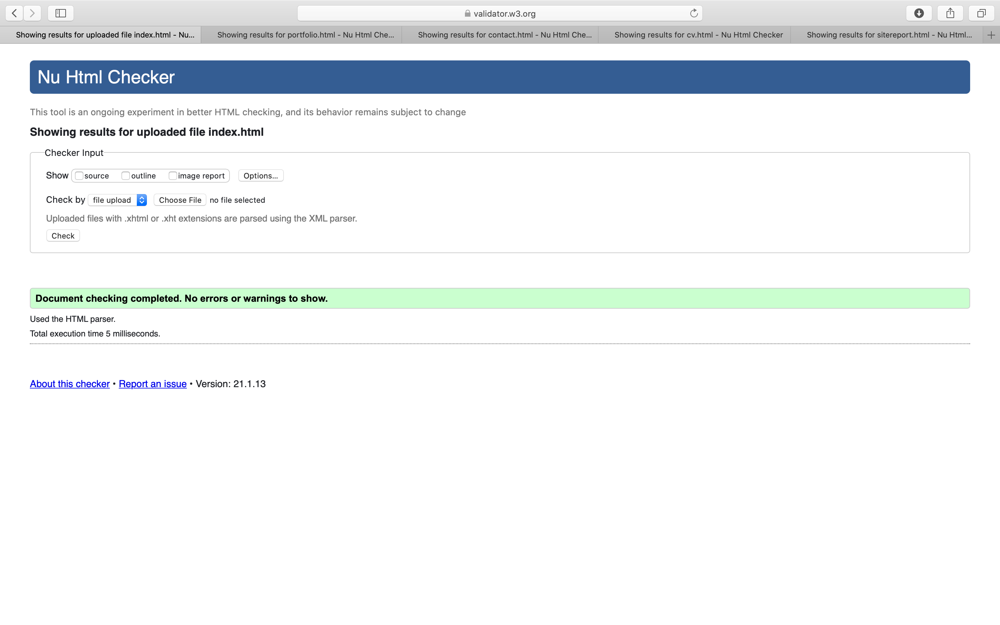

I have found my experience of studying the basics of web development, understandable but challenging. As a new coder, I was overwhelmed by the code however, having watched the lectures over again has aided me to improve my understanding of HTML.
Since September, I have gained knowledge in creating a website. I am now capable of creating a basic website with features such as an email box and making my site to a mobile friendly size. I am also capable of inserting images to my site aswell as adding a hover effect as an animation. In order for the presentation of my website to be understandable I inserted columns.
There have been certain moments whilst learning that I have struggled with such as creating columns. Another thing that I have struggled with is creating the hamburger icon when in mobile friendly size. With regards to creating my hamburger icon I managed to have two lines but inserting the third was hard. I have left my attempted hamburger icon on my home page.
There are many features within the website that are very crucial. One of these the use of appropriate fonts and colours. Within the whole creation of my site, I used Times new roman. The reason why is because it is a universal font that can be used on different software. I have also ensured that the colour is user friendly as well as well-presented and professional.
To conclude, overall, I have enjoyed studying web development. Although, I have found it challenging, I still believe that I have learnt a lot and I am ready to expand my knowledge further.
Validations
Index Validation
Portfolio Validation

Contact Validation

CV Validation

Site Report

CSS Validations
Index CSS Validation

CV css validations

mobile